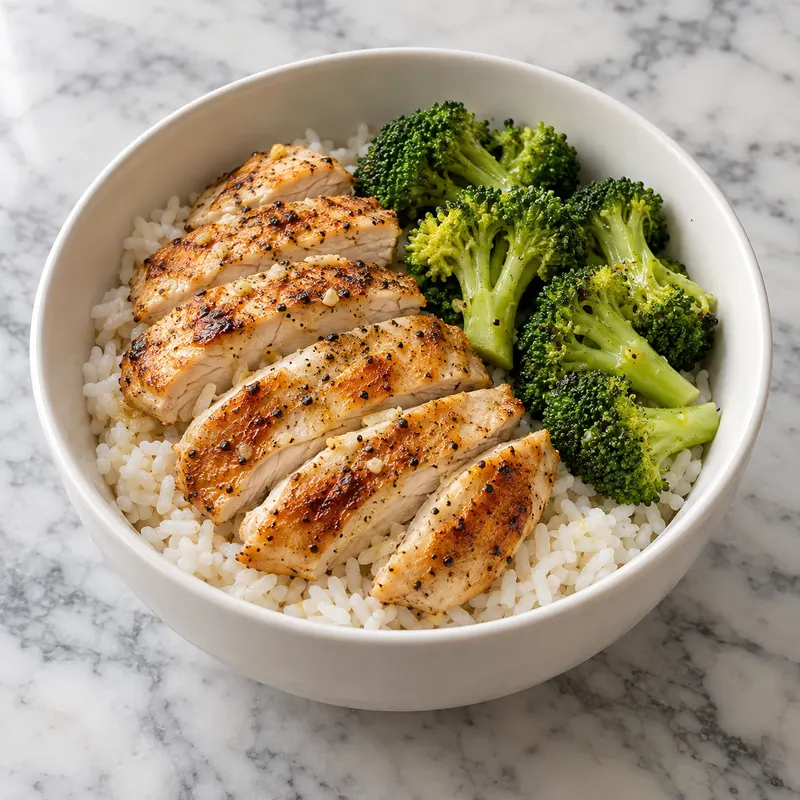

Toque num item pra ajustar
Exemplo com o bowl de frango, arroz e brócolis. Números da TACO. Toque numa linha pra ajustar gramas e preparo; o ✓ tira ou põe o item.

Toque num item pra ajustar
É grátis (não usa IA). O app abre o leitor pronto do Google, lê o código e busca o rótulo no Open Food Facts. Produto de exemplo; os números são ilustrativos.
Vai pra: Lanche
1 · Na tela do scanner
No navegador (sem câmera) aparece um campo pra digitar o número.
2 · Leitor do Google (tela do sistema, não é nossa)
Aponte para o código. Fecha sozinho ao ler.
3 · Revisão
Números do rótulo do produto
Ajuste a quantidade que você comeu (g ou ml).
Se o produto não está na base
Não achei esse produto na base pública. Me diz o nome (e a marca) que o Life estima:
Aqui usa IA e conta no limite do dia.